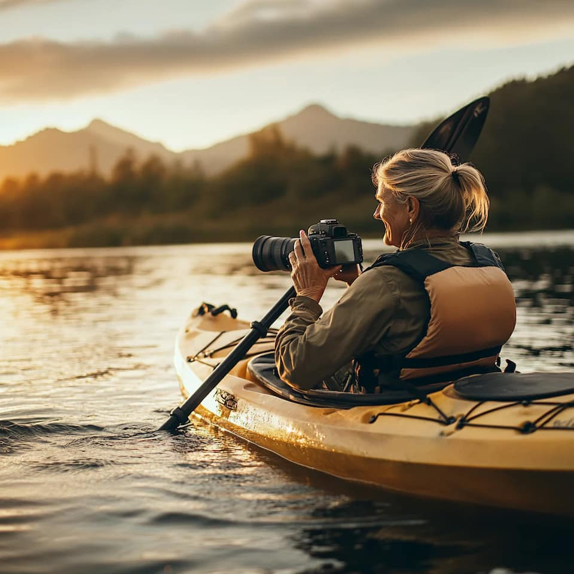
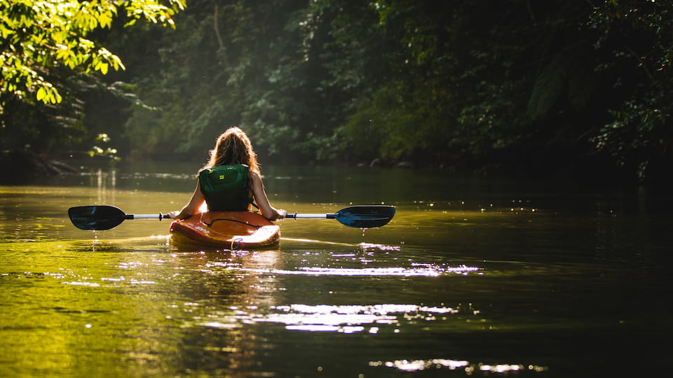
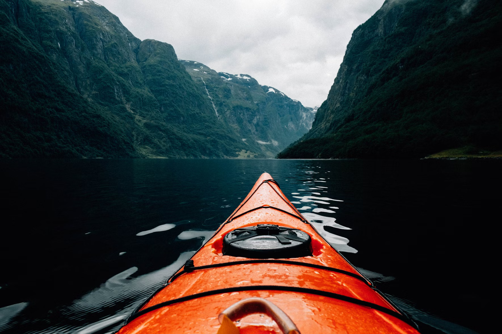
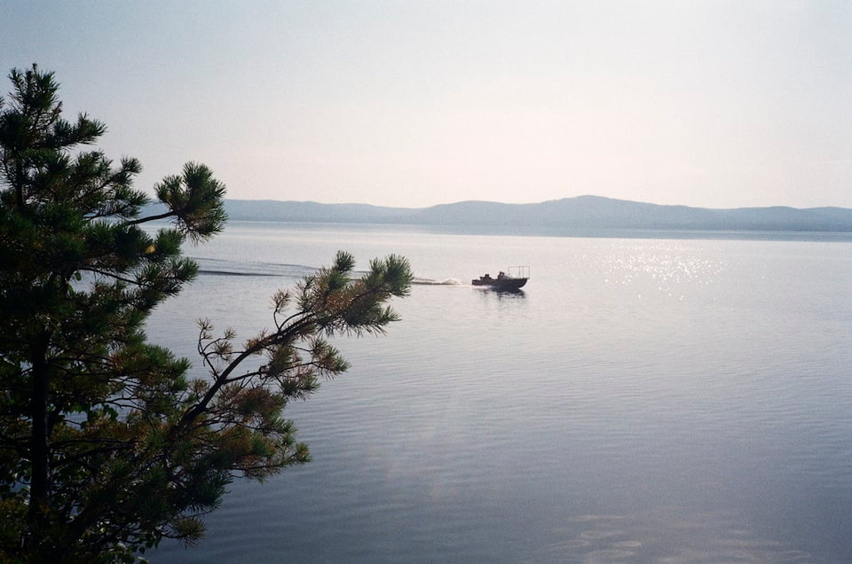

Welcome to Lochquarry Outdoor Centre
Water Activities
Water-based activities all take place on Lochquarry itself.
Professional Kayaking
Experience the loch like a pro with our high-end equipment and expert-led sessions.

Kayaking
Have a go at paddling, rolling and rafting in one of our brand new kayaks. Max group size 8. Ages 8+

Canoeing
Work single-handedly or in pairs to canoe the length of Lochquarry. You can even take a picnic with you and explore some of the Loch's islands. Max group size 8 boats (up to 16 people). Ages 6+

Powerboating
Take control of one of the Centre’s two RIBs out on Lochquarry and try your hand powerboating. Max group size 6. Ages 12+

"Canoeing was the best. We rafted 2 canoes together and we all stood up and didn't fall in!" – Primary 7 pupil
Stay safe on the water by checking the local forecast:
Visit the Met Office website